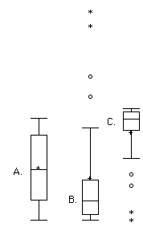

2 Describing One Variable at a Time
Note: This chapter is adapted from the public domain resource Online Statistics Education: A Multimedia Course of Study (https://onlinestatbook.com Project Leader: David M. Lane, Rice University)
This chapter introduces a variety of concepts and statistics that help us describe one variable at a time. Most of this chapter will focus on quantitative variables, since there is a wide variety of commonly used descriptive tools that are only applicable to quantitative variables.
2.1 Distributions1
2.1.1 Distributions of Qualitative or Discrete Variables
I recently purchased a bag of Plain M&M’s. The M&M’s were in six different colors. A quick count showed that there were 55 M&M’s: 17 brown, 18 red, 7 yellow, 7 green, 2 blue, and 4 orange. These counts are shown below in Table 2.1.
| Color | Frequency | |||
|---|---|---|---|---|
| Brown Red Yellow Green Blue Orange |
17 18 7 7 2 4 |
This table is called a frequency table and it describes the distribution of M&M color frequencies. Not surprisingly, this kind of distribution is called a frequency distribution. Often a frequency distribution is shown graphically, as we saw in the prior chapter.
2.1.2 Continuous Variables
The variable “color of M&M” is a qualitative variable, and its distribution is called discrete because there are a finite number of values the variable can take on. Let us now extend the concept of a distribution to quantitative variables measured to many decimal places.
The data shown in Table 2.2 are the times it took David Lane (the author of most of the material in this chapter) to move the cursor over a small target in a series of 20 trials. The times are sorted from shortest to longest. The variable “time to respond” is a continuous variable. With time measured accurately (to many decimal places), no two response times would be expected to be the same. Measuring time in milliseconds (thousandths of a second) is often precise enough to approximate a continuous variable in psychology. As you can see in Table 2.2, measuring David Lane’s responses this way produced times no two of which were the same. As a result, a frequency distribution would be uninformative: it would consist of the 20 times in the experiment, each with a frequency of 1.
| 568 577 581 640 641 645 657 673 696 703 |
720 728 729 777 808 824 825 865 875 1007 |
The solution to this problem is to create a grouped frequency distribution, as we saw when creating bins for histograms in Section 1.3.2. In a grouped frequency distribution, scores falling within various ranges are tabulated. Table 2.3 shows a grouped frequency distribution for these 20 times.
| Range | Frequency | |||
|---|---|---|---|---|
| 500-600 600-700 700-800 800-900 900-1000 1000-1100 |
3 6 5 5 0 1 |
2.1.3 Shapes of Distributions
As we’ve already seen when graphing different data, distributions have different shapes. Some distributions are symmetric; if you folded them in the middle, the two sides would match perfectly. Figure 2.1 shows the discrete distribution of scores on a psychology test. This distribution is not symmetric: the tail in the positive direction extends further than the tail in the negative direction. A distribution with the longer tail extending in the positive direction is said to have a positive skew. It is also described as “skewed to the right.”

Although less common, some distributions have a negative skew. Figure 2.2 shows the scores on a 20-point problem on a statistics exam. Since the tail of the distribution extends to the left, this distribution is skewed to the left.

The distributions shown so far all have one distinct high point or peak. The distribution in Figure 2.3 has two distinct peaks. A distribution with two peaks is called a bimodal distribution.

2.2 Percentiles2
Percentiles are a helpful tool for describing distributions. Many of us have probably encountered percentiles before in the context of standardized exam testing. A test score in and of itself is usually difficult to interpret. For example, if you learned that your score on a measure of shyness was 35 out of a possible 50, you would have little idea how shy you are compared to other people. More relevant is the percentage of people with lower shyness scores than yours. This percentage is called a percentile. If 65% of the scores were below yours, then your score would be the 65th percentile.
2.2.1 Three Alternative Definitions of Percentile
There is no universally accepted definition of a percentile. Using the 65th percentile as an example, the 65th percentile can be defined as the lowest score that is greater than 65% of the scores. This is the way we defined it above and we will call this “Definition 1.” The 65th percentile can also be defined as the smallest score that is greater than or equal to 65% of the scores. This we will call “Definition 2.” Though these two definitions appear very similar, they can sometimes lead to dramatically different results, especially when there is relatively little data. Moreover, neither of these definitions is explicit about how to handle rounding. For instance, what rank is required to be higher than 65% of the scores when the total number of scores is 50? This is tricky because 65% of 50 is 32.5. How do we find the lowest number that is higher than 32.5 of the scores?
A third way to compute percentiles is a weighted average of the percentiles computed according to the first two definitions. The details of computing percentiles under this third definition are a bit complicated, but fortunately, statistical software can easily do the calculations for us. Since it is unlikely you will need to compute percentiles by hand, we leave the details of these computations to the appendix appearing at the end of this chapter. Despite its complexity, the third definition handles rounding more gracefully than the other two and has the advantage that it allows the median to be defined conveniently as the 50th percentile. Unless otherwise specified, when we refer to “percentile,” we will be referring to this third definition of percentiles.
2.3 Measures of Central Tendency3
2.3.1 Mean
The mean4 is the most common measure of central tendency. It is simply the sum of the numbers divided by the number of numbers. When using symbols and formulas to represent different statistics, we often distinguish between whether we are looking at a “sample” or a “population.” We’ll cover this distinction in more detail in Chapter 5. For now, think of a pollster who has conducted a survey with a sample of 1000 people. Even though only 1000 people responded to the survey, the pollster is actually interested in estimating the attitudes of a larger population—the entire public.
The symbol \(\mu\) is used for the mean of a population. The symbol \(\bar{x}\) is used for the mean of a sample. The formula for \(\mu\) is shown below:
\[ \mu = \frac{\sum_{i=1}^{N} x_i}{N} \]
where \(\sum_{i=1}^{N} x_i\) is the sum of all the numbers in the population and \(N\) is the number of numbers in the population. Note that the summation syntax \(\sum_{i=1}^{N}\) indicates that we begin at \(i=1\) and repeatedly increase the value of our counter \(i\) by 1 until we get to \(N\). Each time, we take \(x_i\), which refers to the \(i\)th observation of the variable \(x\), and that is the value we add to the running list of values to sum.
The formula for \(\bar{x}\) is essentially identical:
\[ \bar{x} = \frac{\sum_{i=1}^{n} x_i}{n} \]
where \(\sum_{i=1}^{n} x_i\) is the sum of all the numbers in the sample and \(n\) is the number of numbers in the sample.
As an example, the mean of the numbers 1, 2, 3, 6, 8 is 20/5 = 4 regardless of whether the numbers constitute the entire population or just a sample from the population.
Table 2.4 shows the number of touchdown (TD) passes thrown by each of the 31 teams in the National Football League in the 2000 season. The mean number of touchdown passes thrown is 20.4516 as shown below.
\[ \mu = \frac{\sum_{i=1}^{N} x_i}{N} = \frac{634}{31} = 20.4516 \]
| 37 33 33 32 29 28 28 23 22 22 22 21 21 21 20 20 19 19 18 18 18 18 16 15 14 14 14 12 12 9 6 |
2.3.2 Median
The median is also a frequently used measure of central tendency. The median is the midpoint of a distribution: the same number of scores is above the median as below it. For the data in Table 2.4, there are 31 scores. The 16th highest score (which equals 20) is the median because there are 15 scores below the 16th score and 15 scores above the 16th score. The median can also be thought of as the 50th percentile.
2.3.2.1 Computation of the Median
When there is an odd number of numbers, the median is simply the middle number. For example, the median of 2, 4, and 7 is 4. When there is an even number of numbers, the median is the mean of the two middle numbers. Thus, the median of the numbers 2, 4, 7, 12 is (4+7)/2 = 5.5.
2.3.3 Mode
The mode is the most frequently occurring value. For the data in Table 2.4, the mode is 18 since more teams (4) had 18 touchdown passes than any other number of touchdown passes. With continuous data such as response time measured to many decimals, the frequency of each value is one since no two scores will be exactly the same (see Section 2.1.2). Therefore the mode of continuous data is normally computed from a grouped frequency distribution. Table 2.5 shows a grouped frequency distribution for the target response time data. Since the interval with the highest frequency is 600-700, the mode is the middle of that interval (650).
| Range | Frequency | ||
|---|---|---|---|
| 500-600 600-700 700-800 800-900 900-1000 1000-1100 |
3 6 5 5 0 1 |
2.3.4 Comparing Measures of Central Tendency5
How do the various measures of central tendency compare with each other? For symmetric distributions, the mean and median are equal, as is the mode except in bimodal distributions. Differences among the measures occur with skewed distributions. Consider the positively skewed distribution we saw earlier in the chapter (Figure 2.1). Measures of central tendency for this distribution are shown in Table 2.6. Notice they do not differ greatly, with the exception that the mode is considerably lower than the other measures. When distributions have a positive skew, the mean is typically higher than the median, although it may not be in bimodal distributions. For these data, the mean of 91.58 is higher than the median of 90.
| Measure | Value | ||
|---|---|---|---|
| Mode Median Mean |
84.00 90.00 91.58 |
The distribution of baseball salaries (in 1994) shown in Figure 2.4 has a much more pronounced skew than the distribution in Figure 2.1.

Table 2.7 shows the measures of central tendency for these data. The large skew results in very different values for these measures. No single measure of central tendency is sufficient for data such as these. If you were asked the very general question: “So, what do baseball players make?” and answered with the mean of $1,183,000, you would not have told the whole story since only about one third of baseball players make that much. If you answered with the mode of $250,000 or the median of $500,000, you would not be giving any indication that some players make many millions of dollars. Fortunately, there is no need to summarize a distribution with a single number. When the various measures differ, our opinion is that you should report the mean and the median. Sometimes it is worth reporting the mode as well. In the media, the median is usually reported to summarize the center of skewed distributions. You will hear about median salaries and median prices of houses sold, etc. This is better than reporting only the mean, but it would be informative to hear more statistics.
| Measure | Value | |||
|---|---|---|---|---|
| Mode Median Mean |
250 500 1,183 |
2.4 Measures of Spread6
2.4.1 What is Variability?
Variability refers to how “spread out” a group of scores is. To see what we mean by spread out, consider Figure 2.5 and Figure 2.6. These graphs represent the scores on two quizzes. The mean score for each quiz is 7.0. Despite the equality of means, you can see that the distributions are quite different. Specifically, the scores on Quiz 1 are more densely packed and those on Quiz 2 are more spread out. The differences among students were much greater on Quiz 2 than on Quiz 1.


The terms variability, spread, and dispersion are synonyms, and refer to how spread out a distribution is. Just as in the section on central tendency where we discussed measures of the center of a distribution of scores, in this section we will discuss measures of the variability of a distribution. There are four frequently used measures of variability: the range, interquartile range, variance, and standard deviation. In the next few paragraphs, we will look at each of these four measures of variability in more detail.
2.4.2 Range
The range is the simplest measure of variability to calculate, and one you have probably encountered many times in your life. The range is simply the highest score minus the lowest score. Let’s take a few examples. What is the range of the following group of numbers: 10, 2, 5, 6, 7, 3, 4? Well, the highest number is 10, and the lowest number is 2, so 10 - 2 = 8. The range is 8. Let’s take another example. Here’s a dataset with 10 numbers: 99, 45, 23, 67, 45, 91, 82, 78, 62, 51. What is the range? The highest number is 99 and the lowest number is 23, so 99 - 23 equals 76; the range is 76. Now consider the two quizzes shown above. On Quiz 1, the lowest score is 5 and the highest score is 9. Therefore, the range is 4. The range on Quiz 2 was larger: the lowest score was 4 and the highest score was 10. Therefore the range is 6.
Be careful, though, about using the range to make comparisons. The range can be sensitive to sample size: a larger sample offers greater opportunity for the range to expand. In the example above, both quizzes have the same number of observations (20), so using the range to make a comparison is perfectly fine. However, if we were to compare two samples with different numbers of observations, then the range is not necessarily a good way to compare the variability of the samples.
2.4.3 Interquartile Range
The interquartile range (IQR) is the range of the middle 50% of the scores in a distribution. It is computed as follows:
\[ IQR = \text{ 75th percentile } - \text{ 25th percentile } \]
For Quiz 1, the 75th percentile is 8 and the 25th percentile is 6. The interquartile range is therefore 2. For Quiz 2, which has greater spread, the 75th percentile is 9, the 25th percentile is 5, and the interquartile range is 4. We’ll see in Section 2.5 that when creating boxplots, the 75th percentile is also called the upper hinge and the 25th percentile is called the lower hinge. Thus, the interquartile range is neatly depicted by the box portion of a boxplot.
2.4.4 Variance
Variability can also be defined in terms of how close the scores in the distribution are to the middle of the distribution. Using the mean as the measure of the middle of the distribution, the variance is defined as the average squared difference of the scores from the mean. The data from Quiz 1 are shown in Table 2.8. The mean score is 7.0. Therefore, the column “Deviation from Mean” contains the score minus 7. The column “Squared Deviation” is simply the previous column squared.
| Scores | Deviation from Mean | Squared Deviation | ||||
|---|---|---|---|---|---|---|
| 9 | 2 | 4 | ||||
| 9 | 2 | 4 | ||||
| 9 | 2 | 4 | ||||
| 8 | 1 | 1 | ||||
| 8 | 1 | 1 | ||||
| 8 | 1 | 1 | ||||
| 8 | 1 | 1 | ||||
| 7 | 0 | 0 | ||||
| 7 | 0 | 0 | ||||
| 7 | 0 | 0 | ||||
| 7 | 0 | 0 | ||||
| 7 | 0 | 0 | ||||
| 6 | -1 | 1 | ||||
| 6 | -1 | 1 | ||||
| 6 | -1 | 1 | ||||
| 6 | -1 | 1 | ||||
| 6 | -1 | 1 | ||||
| 6 | -1 | 1 | ||||
| 5 | -2 | 4 | ||||
| 5 | -2 | 4 | ||||
| Means | ||||||
| 7 | 0 | 1.5 |
One thing that is important to notice is that the mean deviation from the mean is 0. This will always be the case. The mean of the squared deviations is 1.5. Therefore, the variance is 1.5. Analogous calculations with Quiz 2 show that its variance is 6.7. The formula for the variance is:
\[ \sigma^2=\frac{\sum_{i=1}^{N} (x_i-\mu)^2}{N} \]
where \(\sigma^2\) is the variance, \(\mu\) is the mean, and \(N\) is the number of numbers. For Quiz 1, \(\mu\) = 7 and \(N\) = 20.
If the variance in a sample is used to estimate the variance in a population, then the previous formula underestimates the variance and the following formula should be used:
\[ s^2=\frac{\sum_{i=1}^{n}(x_i-\bar{x})^2}{n-1} \]
where \(s^2\) is the estimate of the variance and \(\bar{x}\) is the sample mean.
Note that \(\bar{x}\) is the mean of a sample taken from a population with a mean of \(\mu\). Since, in practice, the variance is usually computed in a sample, this formula is most often used. While it is not easy to succinctly explain why we divide by \(n-1\) rather than simply \(n\), the simulation “estimating variance”7 illustrates the bias that arises if we use \(n\) as the denominator in the formula.
Let’s look at a concrete example of calculating the sample variance. Assume the scores 1, 2, 4, and 5 were sampled from a larger population. To estimate the variance in the population you would compute \(s^2\) as follows:
\[ \bar{x} = (1 + 2 + 4 + 5)/4 = 12/4 = 3 \]
\[ s^2 = [(1-3)^2 + (2-3)^2 + (4-3)^2 + (5-3)^2]/(4-1) \]\[ = (4 + 1 + 1 + 4)/3 = 10/3 = 3.333 \]
2.4.5 Standard Deviation
The standard deviation is simply the square root of the variance. This makes the standard deviations of the two quiz distributions 1.225 and 2.588. We can interpret the standard deviation of X as approximating the typical distance between a given value of X and the mean of X. For example, suppose I tell you about a prison where the prisoners have a mean age of 42 years with a standard deviation of 8 years. If I randomly select one prisoner and ask you to guess their age, you should probably guess 42 since I’ve told you that is the mean. But even though 42 is your best guess, you can expect your guess to be off by about 8 years since the standard deviation is 8 (meaning the typical distance between a random prisoner’s age and the mean age is approximately 8). You can’t say ahead of time which direction your guess is likely to be off (guessing too old versus too young), just that you are likely to miss the reality for a randomly-selected individual by about 8 years on a typical guess (though any one guess may happen to be closer or further than 8 years).
2.5 Box Plots8
Box plots are useful for making comparisons and identifying outliers, meaning unusually large or small values for a variable. We will explain box plots with the help of data from an in-class experiment. As part of the “Stroop Interference Case Study,”9 students in introductory statistics were presented with a page containing 30 colored rectangles. Their task was to name the colors as quickly as possible. Their times (in seconds) were recorded. We’ll compare the scores for the 16 men and 31 women who participated in the experiment by making separate box plots for each gender. Such a display is said to involve parallel box plots.
There are several steps in constructing a box plot. The first relies on the 25th, 50th, and 75th percentiles in the distribution of scores. Figure 2.7 shows how these three statistics are used. For each gender, we draw a box extending from the 25th percentile to the 75th percentile. The 50th percentile is drawn inside the box. Therefore, the bottom of each box is the 25th percentile, the top is the 75th percentile, and the line in the middle is the 50th percentile. The data for the women in our sample are shown in Table 2.9.

| 14 15 16 16 17 |
17 17 17 17 18 |
18 18 18 18 18 |
19 19 19 20 20 |
20 20 20 20 21 |
21 22 23 24 24 |
29 |
For these data, the 25th percentile is 17, the 50th percentile is 19, and the 75th percentile is 20. For the men (whose data are not shown), the 25th percentile is 19, the 50th percentile is 22.5, and the 75th percentile is 25.5.
Before proceeding, the terminology in Table 2.10 is helpful.
| Name | Formula | Value |
|---|---|---|
| Upper Hinge | 75th Percentile | 20 |
| Lower Hinge | 25th Percentile | 17 |
| H-Spread | Upper Hinge - Lower Hinge | 3 |
| Step | 1.5 x H-Spread | 4.5 |
| Upper Inner Fence | Upper Hinge + 1 Step | 24.5 |
| Lower Inner Fence | Lower Hinge - 1 Step | 12.5 |
| Upper Outer Fence | Upper Hinge + 2 Steps | 29 |
| Lower Outer Fence | Lower Hinge - 2 Steps | 8 |
| Upper Adjacent | Largest value below Upper Inner Fence | 24 |
| Lower Adjacent | Smallest value above Lower Inner Fence | 14 |
| Outside Value | A value beyond an Inner Fence but not beyond an Outer Fence | 29 |
| Far Out Value | A value beyond an Outer Fence | None |
Continuing with the box plots, we put “whiskers” above and below each box to give additional information about the spread of the data. Whiskers are vertical lines that end in a horizontal stroke. Whiskers are drawn from the upper and lower hinges to the upper and lower adjacent values (24 and 14 for the women’s data).
Although we don’t draw whiskers all the way to outside or far out values, we still wish to represent them in our box plots. This is achieved by adding additional marks beyond the whiskers. Specifically, outside values are indicated by small “o’s” and far out values are indicated by asterisks (*). In our data, there are no far out values and just one outside value. This outside value of 29 is for the women and is shown in Figure 2.8.

There is one more mark to include in box plots (although sometimes it is omitted). We indicate the mean score for a group by inserting a plus sign. Figure 2.9 shows the result of adding means to our box plots.

Figure 2.9 provides a revealing summary of the data. Since half the scores in a distribution are between the hinges (recall that the hinges are the 25th and 75th percentiles), we see that half the women’s times are between 17 and 20 seconds, whereas half the men’s times are between 19 and 25.5. We also see that women generally named the colors faster than the men did, although one woman was slower than almost all of the men. Figure 2.10 shows the box plot for the women’s data with detailed labels.

Box plots provide basic information about a distribution. For example, a distribution with a positive skew would have a longer whisker in the positive direction than in the negative direction. A larger mean than median would also indicate a positive skew. Box plots are good at portraying extreme values and are especially good at showing differences between distributions. However, many of the details of a distribution are not revealed in a box plot, and to examine these details one should create a histogram.
2.5.1 Variations on box plots
Statistical analysis programs may offer options on how box plots are created. For example, the box plots in Figure 2.11 are constructed from our data but differ from the previous box plots in several ways.
It does not mark outliers.
The means are indicated by green lines rather than plus signs.
The mean of all scores is indicated by a gray line.
Individual scores are represented by dots. Since the scores have been rounded to the nearest second, any given dot might represent more than one score.
The box for the women is wider than the box for the men because the widths of the boxes are proportional to the number of subjects of each gender (31 women and 16 men).

Each dot in Figure 2.11 represents a group of subjects with the same score (rounded to the nearest second). An alternative graphing technique is to “jitter” the points. This means spreading out different dots at the same horizontal position, one dot for each subject. The exact horizontal position of a dot is determined randomly (under the constraint that different dots don’t overlap exactly). Spreading out the dots helps you to see multiple occurrences of a given score. However, depending on the dot size and the screen resolution, some points may be obscured even if the points are jittererd. Figure 2.12 shows what jittering looks like.

Different styles of box plots are best for different situations, and there are no firm rules for which to use. When exploring your data, you should try several ways of visualizing them. Which graphs you include in your report should depend on how well different graphs reveal the aspects of the data you consider most important.
2.6 Transforming Variables10
Often it is necessary to transform data from one measurement scale to another. For example, you might want to convert height measured in feet to height measured in inches. Table 2.11 shows the heights of four people measured in both feet and inches. To transform feet to inches, you simply multiply by 12. Similarly, to transform inches to feet, you divide by 12.
| Feet | Inches | |||
|---|---|---|---|---|
| 5.00 6.25 5.50 5.75 |
60 75 66 69 |
Some conversions require that you multiply by a number and then add a second number. A good example of this is the transformation between degrees Centigrade and degrees Fahrenheit. Table 2.12 shows the temperatures of 5 US cities in the early afternoon of November 16, 2002.
| City | Degrees Fahrenheit | Degrees Centigrade | ||||
|---|---|---|---|---|---|---|
| Houston Chicago Minneapolis Miami Phoenix |
54 37 31 78 70 |
12.22 2.78 -0.56 25.56 21.11 |
The formula to transform Centigrade to Fahrenheit is:
\[ F = 1.8C + 32 \]
The formula for converting from Fahrenheit to Centigrade is
\[ C = 0.5556F - 17.778 \]
The transformation consists of multiplying by a constant and then adding a second constant. For the conversion from Centigrade to Fahrenheit, the first constant is 1.8 and the second is 32.
Figure 2.13 shows a plot of degrees Centigrade as a function of degrees Fahrenheit. Notice that the points form a straight line. This will always be the case if the transformation from one scale to another consists of multiplying by one constant and then adding a second constant. Such transformations are therefore called linear transformations.

2.6.1 Standardization (Z Scores)
So far, we’ve discussed transformations that are probably familiar to you. A type of transformation that may be new to you is standardization or creating \(z\) scores. A value from any distribution can be transformed into a \(z\) score using the following formula:
\[ z = \frac{(x - \mu)}{\sigma} \]
where \(z\) is the new value, \(x\) is the value on the original distribution, \(\mu\) is the mean of the original distribution, and \(\sigma\) is the standard deviation of the original distribution.
As a simple application, suppose you want the \(z\) score for a value of 26 taken from a distribution with a mean of 50 and a standard deviation of 10. Applying the formula, we obtain:
\[ z = (26 - 50)/10 = -2.4 \]
If all the values in a distribution are transformed to \(z\) scores, then the new distribution will have a mean of 0 and a standard deviation of 1. This process of transforming a distribution to one with a mean of 0 and a standard deviation of 1 is called standardizing the distribution. Sometimes it will be easier to work with a standardized version of a variable.
2.6.2 Log Transformations11
Sometimes it is also useful to use transformations that are not linear. For example, the log transformation can sometimes be used to make highly skewed distributions less skewed. This can be valuable both for making patterns in the data more interpretable and for helping to meet the assumptions of inferential statistics (see Chapter 5).
Figure 2.14 shows an example of how a log transformation can make patterns more visible. Both graphs plot the brain weight of animals as a function of their body weight. The raw weights are shown in the upper panel; the log-transformed weights are plotted in the lower panel.

It is hard to discern a pattern in the upper panel whereas the strong relationship is shown clearly in the lower panel.
2.7 Exercises12
Find the mean and median for the following three variables:
A B C 8 4 6 5 4 2 7 6 3 1 3 4 3 4 1 You recorded the time in seconds it took for 8 participants to solve a puzzle. These times appear below. However, when the data was entered into the statistical program, the score that was supposed to be 22.1 was entered as 21.2. You had calculated the following measures of central tendency: the mean and the median. Which of these measures of central tendency will change when you correct the recording error?
15.2
18.8
19.3
19.7
20.2
21.8
22.1
29.4For the scores in the prior question, which measures of variability (range, standard deviation, variance) would be changed if the 22.1 data point had been erroneously recorded as 21.2?
You know the minimum, the maximum, and the 25th, 50th, and 75th percentiles of a distribution. Which of the following measures of central tendency or variability can you determine? mean, median, mode, range, interquartile range, variance, standard deviation
A sample of 30 distance scores measured in yards has a mean of 7, a variance of 16, and a standard deviation of 4. (a) You want to convert all your distances from yards to feet, so you multiply each score in the sample by 3. What are the new mean, variance, and standard deviation? (b) You then decide that you only want to look at the distance past a certain point. Thus, after multiplying the original scores by 3, you decide to subtract 4 feet from each of the scores. Now what are the new mean, variance, and standard deviation?
Your younger brother comes home one day after taking a science test. He says that someone at school told him that “60% of the students in the class scored above the median test grade.” What is wrong with this statement? What if he said “60% of the students scored below the mean?”
If the mean time to respond to a stimulus is much higher than the median time to respond, what can you say about the shape of the distribution of response times?
An experiment compared the ability of three groups of participants to remember briefly-presented chess positions. The data are shown below. The numbers represent the total number of pieces correctly remembered from three chess positions. Create side-by-side box plots for these three groups. What can you say about the differences between these groups from the box plots?
Non-players Beginners Tournament players 22.1 32.5 40.1 22.3 37.1 45.6 26.2 39.1 51.2 29.6 40.5 56.4 31.7 45.5 58.1 33.5 51.3 71.1 38.9 52.6 74.9 39.7 55.7 75.9 43.2 55.9 80.3 43.2 57.7 85.3 In a box plot, what percent of the scores are between the lower and upper hinges?
Which of the box plots in Figure 2.15 has a large positive skew? Which has a large negative skew?
Figure 2.15 When is a log transformation valuable?
Chapter 2 Appendix: Calculating Percentiles Under the Third Definition13
Let’s begin with an example. Consider the 25th percentile for the 8 numbers in Table 2.13. Notice the numbers are given ranks ranging from 1 for the lowest number to 8 for the highest number.
| Number | Rank | |||
|---|---|---|---|---|
| 3 5 7 8 9 11 13 15 |
1 2 3 4 5 6 7 8 |
The first step is to compute the rank (\(R\)) of the 25th percentile. This is done using the following formula:
\[ R = P/100 \times (N + 1) \]
where \(P\) is the desired percentile (25 in this case) and \(N\) is the number of numbers (8 in this case). Therefore,
\[ R = 25/100 \times (8 + 1) = 9/4 = 2.25. \]
If \(R\) is an integer, the \(Pth\) percentile is the number with rank \(R\). When \(R\) is not an integer, we compute the \(Pth\) percentile by interpolation as follows:
Define \(IR\) as the integer portion of \(R\) (the number to the left of the decimal point). For this example, \(IR\) = 2.
Define \(FR\) as the fractional portion of \(R\). For this example, \(FR\) = 0.25.
Find the scores with Rank \(IR\) and with Rank \(IR\) + 1. For this example, this means the score with Rank 2 and the score with Rank 3. The scores are 5 and 7.
Interpolate by multiplying the difference between the scores by \(FR\) and add the result to the lower score. For these data, this is (0.25)(7 - 5) + 5 = 5.5.
Therefore, the 25th percentile is 5.5. If we had used the first definition (the smallest score greater than 25% of the scores), the 25th percentile would have been 7. If we had used the second definition (the smallest score greater than or equal to 25% of the scores), the 25th percentile would have been 5.
For a second example, consider the 20 quiz scores shown in Table 2.14.
| Score | Rank | |||
|---|---|---|---|---|
| 4 4 5 5 5 5 6 6 6 7 7 7 8 8 9 9 9 10 10 10 |
1 2 3 4 5 6 7 8 9 10 11 12 13 14 15 16 17 18 19 20 |
We will compute the 25th and the 85th percentiles. For the 25th,
\[ R = 25/100 \times (20 + 1) = 21/4 = 5.25. \]
\[ IR = 5 \text{ and } FR = 0.25. \]
Since the score with a rank of \(IR\) (which is 5) and the score with a rank of \(IR\) + 1 (which is 6) are both equal to 5, the 25th percentile is 5. In terms of the formula:
\[ \text{ 25th percentile } = (.25) \times (5 - 5) + 5 = 5. \]
For the 85th percentile,
\[ R = 85/100 \times (20 + 1) = 17.85. \]
\[ IR = 17 \text{ and } FR = 0.85 \]
Caution: \(FR\) does not generally equal the percentile to be computed as it does here.
The score with a rank of 17 is 9 and the score with a rank of 18 is 10. Therefore, the 85th percentile is:
\[ (0.85)(10 - 9) + 9 = 9.85 \]
Consider the 50th percentile of the numbers 2, 3, 5, 9.
\[ R = 50/100 \times (4 + 1) = 2.5. \]
\[ IR = 2 \text{ and } FR = 0.5. \]
The score with a rank of \(IR\) is 3 and the score with a rank of \(IR\) + 1 is 5. Therefore, the 50th percentile is:
\[ (0.5)(5 - 3) + 3 = 4. \]
Finally, consider the 50th percentile of the numbers 2, 3, 5, 9, 11.
\[ R = 50/100 \times (5 + 1) = 3. \]
\[ IR = 3 \text{ and } FR = 0. \]
Whenever \(FR\) = 0, you simply find the number with rank \(IR\). In this case, the third number is equal to 5, so the 50th percentile is 5. You will also get the right answer if you apply the general formula:
\[ \text{ 50th percentile }= (0.00) (9 - 5) + 5 = 5. \]
This section is adapted from David M. Lane and Heidi Ziemer. “Distributions.” Online Statistics Education: A Multimedia Course of Study. https://onlinestatbook.com/2/introduction/distributions.html↩︎
This section is adapted from David M. Lane. “Percentiles.” Online Statistics Education: A Multimedia Course of Study. https://onlinestatbook.com/2/introduction/percentiles.html↩︎
This section is adapted from David M. Lane. “Measures of Central Tendency.” Online Statistics Education: A Multimedia Course of Study. https://onlinestatbook.com/2/summarizing_distributions/measures.html↩︎
More specifically, the arithmetic mean is the most common measure of central tendency. Although the arithmetic mean is not the only “mean” (there is also a geometric mean), it is by far the most commonly used. Therefore, if the term “mean” is used without specifying whether it is the arithmetic mean, the geometric mean, or some other mean, it is assumed to refer to the arithmetic mean.↩︎
This section is adapted from David M. Lane. “Comparing Measures of Central Tendency.” Online Statistics Education: A Multimedia Course of Study. https://onlinestatbook.com/2/summarizing_distributions/comparing_measures.html↩︎
This section is adapted from David M. Lane. “Measures of Variability.” Online Statistics Education: A Multimedia Course of Study. https://onlinestatbook.com/2/summarizing_distributions/variability.html↩︎
https://onlinestatbook.com/2/summarizing_distributions/variance_est.html↩︎
This section is adapted from David M. Lane. “Box Plots.” Online Statistics Education: A Multimedia Course of Study. https://onlinestatbook.com/2/graphing_distributions/boxplots.html↩︎
The initial part of this section is adapted from David M. Lane. “Linear Transformations.” Online Statistics Education: A Multimedia Course of Study. https://onlinestatbook.com/2/introduction/linear_transforms.html. There is also material adapted from David M. Lane. “Standard Normal Distribution.” Online Statistics Education: A Multimedia Course of Study. https://onlinestatbook.com/2/normal_distribution/standard_normal.html.↩︎
This subsection is adapted from David M. Lane. “Log Transformations.” Online Statistics Education: A Multimedia Course of Study. https://onlinestatbook.com/2/transformations/log.html↩︎
Adapted from David M. Lane. “Exercises.” Online Statistics Education: A Multimedia Course of Study. https://onlinestatbook.com/2/graphing_distributions/ch2_exercises.html and https://onlinestatbook.com/2/summarizing_distributions/ch3_exercises.html and https://onlinestatbook.com/2/transformations/exercises.html↩︎
This section is adapted from David M. Lane. “Percentiles.” Online Statistics Education: A Multimedia Course of Study. https://onlinestatbook.com/2/introduction/percentiles.html↩︎